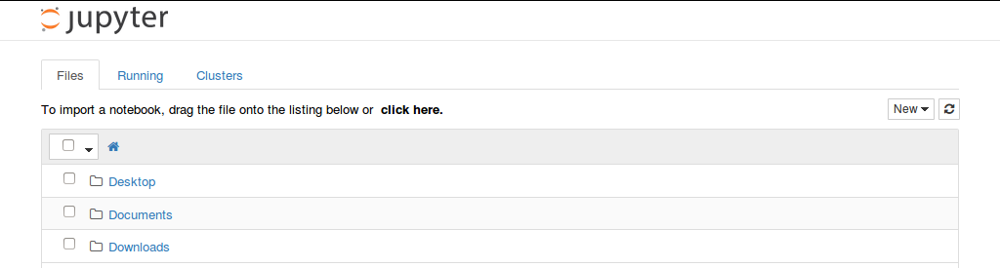
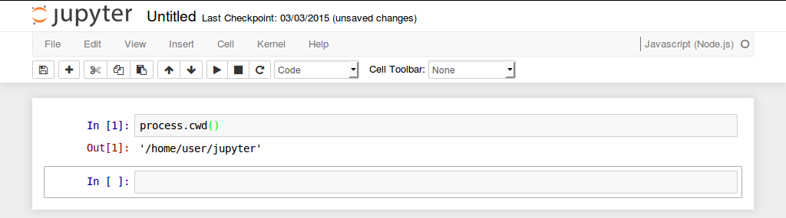

Usage
To start an IJavascript session in the Jupyter notebook, simply run:
ijsThis command will open the Jupyter dashboard in your default web browser:

Register IJavascript with the dashboard
The IJavascript kernel can be registered with Jupyter (and IPython v3) without opening the dashboard. To register the kernel for all users, run:
ijs --ijs-install=globaland for the current user only:
ijs --ijs-install=localSet the dashboard home folder
By default, the dashboard lists the notebooks in the current working folder. The flag --notebook-dir=path/to/another/folder can be used to open the dashboard at a different folder:
ijs --notebook-dir=path/to/another/folder
Set the kernel working folder
Also by default, the IJavascript kernel runs a node.js session in the current working folder. The flag --ijs-working-dir=path/to/another/folder can be used to run the node.js session at a different folder.

Run startup scripts
It is possible to run one or more scripts at the startup of an IJavascript session. This can be useful to preload an npm package (e.g. d3) or a custom $$mimer$$.
To preload a script:
ijs --ijs-startup-script=path/to/script.jsFor convenience, it is also possible to preload all the Javascript files in a folder. The execution order is determined by the alphabetical order of their filenames; for example: 50-package-d3.js, 60-mimer-d3.js.
ijs --ijs-startup-script=path/to/folderRegister a kernel spec with full paths
By default, ijs installs a kernel spec with no paths. For this kernel spec to work, it's necessary that the executable ijskernel is located in one of the folders listed in the environment variable PATH (this is usually the case when IJavascript was installed by running npm install -g ijavascript).
IJavascript can be instructed to install a kernel spec with full paths by running:
ijs --ijs-spec-path=fullIn this case, the full path to node and the kernel will be included in the kernel spec (and thus the kernel spec needs reinstalling whenever the location of either node or ijavascript changes).
Other command flags
Documentation on other flags can be found by running:
ijs --ijs-helpand
ipython notebook --help-allSample notebooks
Here's a sample notebook that makes use of the Javascript kernel:

More examples of use can be found on the IJavascript website.